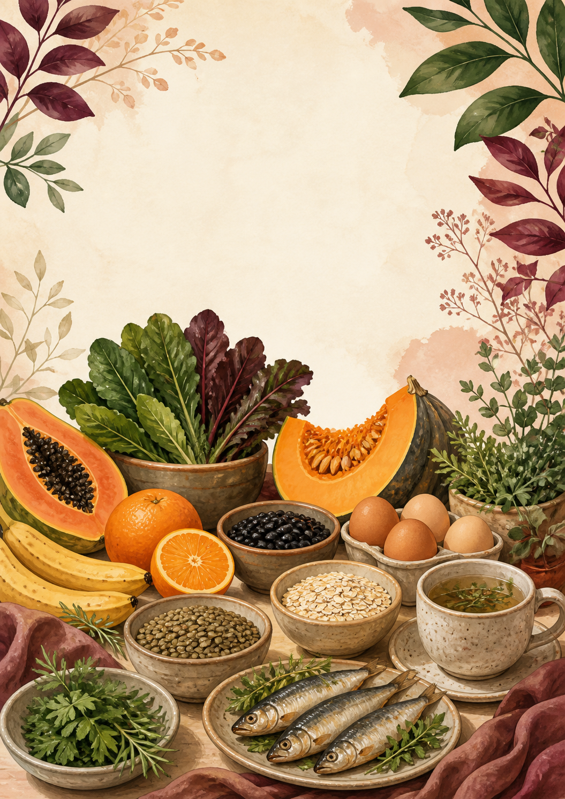

Planeje o mês
Organize café da manhã, almoço, lanche e jantar com sugestões para acompanhar cada fase.
E-book digital
Encontre sugestões de refeições para o mês, receitas práticas, lista de compras e trocas simples para adaptar o plano à sua realidade.
R$ 27,00 · pagamento único · acesso digital

Para os dias reais
O guia não exige perfeição: ele oferece caminhos simples para você montar refeições, repetir o que funciona e ajustar quando necessário.
Organize café da manhã, almoço, lanche e jantar com sugestões para acompanhar cada fase.
Cada refeição traz três alternativas. Você escolhe a que faz sentido naquele dia.
Use o Banco de Trocas quando faltar um ingrediente ou quando quiser variar o preparo.
O que você recebe
Em vez de depender de ideias soltas, você terá uma estrutura simples para escolher, alternar e adaptar suas refeições.
Quero acessar o Endometriose à MesaPlano alimentar
30 dias de sugestões organizadas.
Receitas práticas
Preparos simples para repetir durante a semana.
Banco de Trocas
Alternativas claras quando um ingrediente faltar.
Lista de compras
Uma base para facilitar sua organização.
Use do seu jeito
Veja as opções de refeições e escolha uma alternativa para cada momento do dia.
Use as preparações de que você gosta e volte a elas nos dias mais corridos.
Quando algo não estiver disponível, consulte o Banco de Trocas e siga com a refeição.
Acesso imediato
Receba o Endometriose à Mesa em formato digital após a confirmação do pagamento.